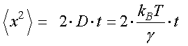
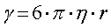
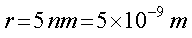
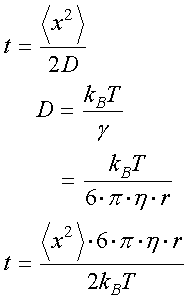
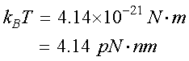

さて，では，具体的な値
直径１０ｎｍの球体
を考えてみましょう．
まあ，大体タンパク質程度の大きさですね．
ここでは，その物体の質量，は考えなくてもかまいません．
水中で浮力が働きますし，タンパクの比重はほとんど１ですから．
先ほどの，拡散方程式，

から計算してみましょう．
球体の摩擦抗力係数，γ，はストークスの法則を使って，

と表すことができます．
ここで，η，は溶液の粘度で，水の場合，２０度で，大体
η＝１０－３［Ｐａ・ｓ］
となります．
また，ｒ，は球体の半径です．
直径，１０ｎｍなので，

拡散方程式を変形して，

となります．
ボルツマン定数，kB，は1.38×10-23 J/K．
絶対温度，Ｔ，を，300 K，とおくと，

となります．この値は結構役に立つ値なので，覚えておいて損はありません．
さて，では，直径１０ｎｍの球体が，移動するには，どのぐらいの時間がかかるのでしょう？
次ページをご覧ください．